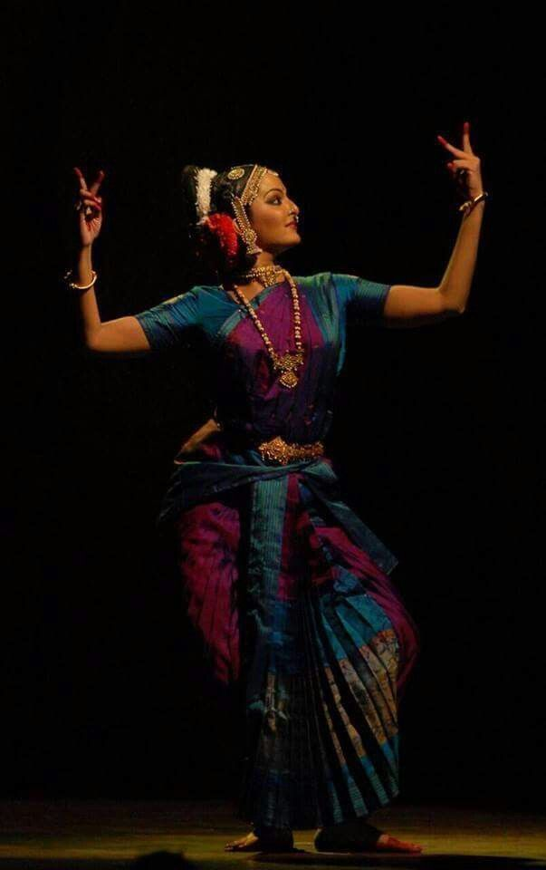

KUCHIPUDI

Kuchipudi (/kuːtʃiˈpuːdi/) ( Telugu: te:కూచిపూడి నృత్యం) is one of the eight major Indian classical dances.[2] It originates from a village named Kuchipudi in the Indian state of Andhra Pradesh.[3]
Kuchipudi is a dance-drama performance, with its roots in the ancient Hindu Sanskrit text of Natya Shastra.[4][5][6] It developed as a religious art linked to traveling bards, temples and spiritual beliefs, like all major classical dances of India.[7] Evidence of Kuchipudi's existence in an older version are found in copper inscriptions of the 10th century, and by the 15th century in texts such as the Machupalli Kaifat.[8][9] Kuchipudi tradition holds that Tirtha Narayana Yati – a sanyassin of Advaita Vedanta persuasion,[10] and his disciple, an orphan named Siddhendra Yogi, founded and systematized the modern version of Kuchipudi in the 17th century.[11][12][13] Kuchipudi largely developed as a Krishna-oriented Vaishnavism tradition,[14] and it is known by the name of Bhagavata Mela in Thanjavur.[8].